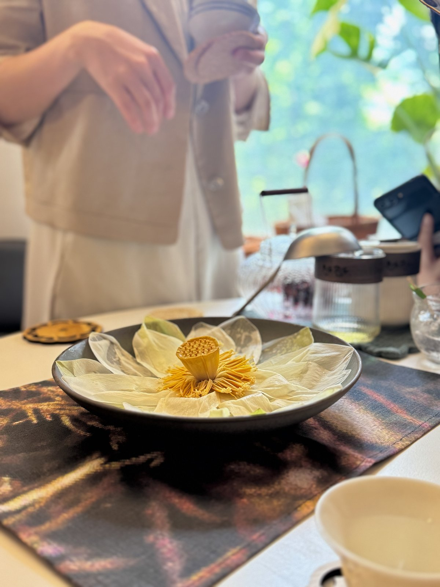
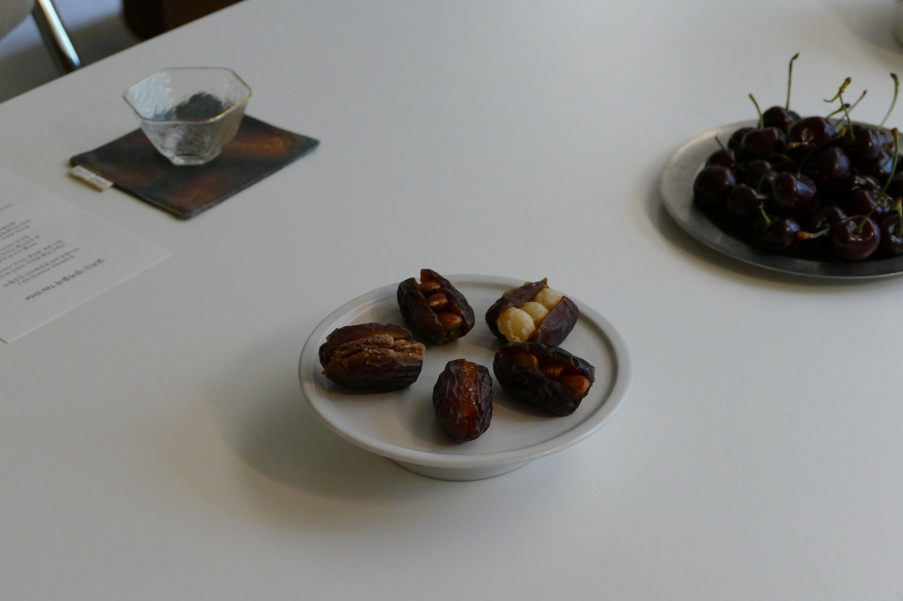

데미스 하사비스의 다큐 두 편과 김아라의 차 한 잔을 함께한 90분. "AI 사각지대에 있는 엄마들이 모이면 무슨 일이 일어날까?"라는 질문에서 시작된 첫 자리.
00. 함께한 분들
이 자리에 함께한 여섯 분 — 성함과 카톡방 닉네임.
01. 모임의 배경
이 자리는 한 마디에서 시작됐어요.
"데미스 하사비스가 한국에 왔는데 왜 이렇게 세상이 조용하지?" — 박유니가 던진 한 마디
"왜겠어, 데미스 하사비스가 누군지 모르니까." 엄마들이 AI라는 변화의 최전선에서 가장 멀리 떨어진 사각지대에 있다는 문제의식이 운영자 머릿속에 박혔어요.
거기에 티 소믈리에 김아라가 첫 자리를 한다고 했고, "90분이라도 이 주제를 가지고 대화하면 힐링이 되겠다"는 확신으로 자리가 만들어졌습니다.
02. 녹음 다시 듣기
전체 85분을 네 부분으로 나눠 보존했어요.
02-1. 그날의 사진
티 소믈리에가 차려준 찻자리의 한 컷씩.


03. 함께 본 유튜브 영상
모임 전 미리 보고 모였던 두 편. 자막 켜고 보기를 권장해요.


04. 다큐 두 편을 보고 받은 인상
🧬 알파폴드 — 그냥 공유해버린 사람의 단단함
특허로 막을 수도 있었는데, 그냥 다 공유했잖아요. 그 사람의 단단함이 부럽더라고요.
LG화학 출신 분의 코멘트로 더 깊어졌어요: "기계공학 전공이지만 단백질 발효 원료를 했었거든요. 그게 엄청난 거구나, 너무 많은 것들을 바꾸겠다는 생각이 들었어요."
🎯 알파고 vs 이세돌 37수 — 인간이 이해하지 못한 그 한 수
바둑을 두지 않는 사람들에게는 "이겼다"는 결과만 와닿았지만, 바둑을 두는 사람이 봤다면 진짜 충격이었을 거라는 통찰. 구글이 37번째 건물 이름을 그 수에서 따왔다는 일화까지.
알파가 고장 난 거 아니야? — 처음 본 사람들의 반응
💪 데미스 하사비스 · 젠슨 황의 뚝심
알파폴드의 단단함 이야기에서 자연스럽게 흘러나온 한 마디 — "데미스도, 젠슨 황도 처음 시작할 때 다들 헛소리라고 했잖아요."
"20년 넘게 헛소리처럼 들리는 얘기를 끝까지 가지고 왔잖아요. 우리 아이도 그런 게 있으면 좋겠다."
🐄 가장 슬링했던 장면 — 소와 스테이크
소가 노동에서 해방되니 그 다음부터 스테이크가 됐다는 다큐 후반부. "옛날 2000년대 사람은 소를 잡아서 그렇게 먹었다고?"라며 놀랄 세상이 곧 올 것 같다는 한 분의 통찰.
05. 함께 도달한 통찰 두 개
① 데미스 하사비스 = AI에게 실패 사례를 만들어준 사람
AI에서 경쟁력이 있는 이유는 내가 되게 많은 실패 사례를 가졌기 때문이다. — 노정석 대표 인용
데미스가 AI를 학습시킨 방식이 그래요. "어떻게 도달해?"가 아니라 "결과 값을 얻을 거야"라고 결과만 주고, 과정은 스스로 만들게 한다. 육아와 닮은 깊이가 있다는 이야기로 이어졌어요.
② 차 · 달리기 · AI 셋 다 닮았다
차
많은 차를 마셔봐야 내게 맞는 게 뭔지 알 수 있어요.
달리기
달려봐야 내 한계가 어디인지 알 수 있어요.
AI
실패 사례가 쌓여야 똑똑해져요. 데미스가 보여줬듯이.
→ 그러면 아이들에게 어떤 걸 줘야 할까. 나는 어떤 걸 키워야 할까.
06. 김아라가 내려준 4잔의 차
향기 · 탐색 · 확장 · 회고 — 네 흐름에 맞춰 준비된 네 잔의 차였어요.
1. 레몬머틀 · 향기
상큼한 레몬향이 생각의 문을 열어줍니다.
2. 초코나무쑥 · 탐색
우리가 살아갈 세상을 들여다봅니다. 향을 맡으면 초코 향이 나서 이름이 그렇게 붙었어요. 거문도 해풍 쑥과 지리산 쑥, 같은 쑥인데 자란 땅에 따라 향이 달라진다는 이야기도 함께.
3. 이스파한 · 확장
낯선 향과 풍미로 새로운 가능성을 만나봅니다.
4. 연꽃 · 회고
은은한 향으로 오늘의 이야기를 머물게 합니다. 꽃잎이 살살 올라오는 비주얼에 모두가 감탄.
차의 세계는 생각보다 넓고 저마다 건네는 이야기가 모두 다릅니다. 오늘 함께 나눈 이야기들이 작은 씨앗이 되어 각자의 일상 속에서 천천히 자라나기를 바랍니다. — 김아라의 티 리스트 카드에서
김아라가 알려준 작은 팁
- 말차 격불 귀찮으면? 생수병에 물 한 모금 마시고 가루 넣어 흔들기
- 도자기 다구 갖추지 않아도 돼요 → 유리잔이면 충분. 색 변하는 것도 재미
- 6대다류 (백 · 녹 · 청 · 홍 · 황 · 흑) → 같은 차나무, 다른 가공
- 보성 · 제주 · 하동 · 거문도 — 지역마다 떼루와가 달라요
07. 가장 따뜻했던 대화 — 엄마, 아이, 그리고 새벽
카오썸 대표 어머님의 새벽 2시간
오늘 자리를 내어준 을지로 카오썸의 대표님 — 그분 어머님이 항상 새벽 두 시간, 자기 시간을 가지신다고 해요. 글을 쓰고, 책을 보고, 차를 마시고.
내가 먼저 입장한 오늘이라는 세상에, 아이를 환영해주는 느낌.
한 분이 한때 모닝페이지 + 차로 새벽을 시작했다가 편해지니 안 하게 됐다고. "승진하고 좀 편해지니까 그게 안 되더라고요. 다시 또 꺼내봐야겠다."
김아라가 차 가르쳐주신 스승님의 28살 아들
어릴 때부터 같이 찻자리를 함. 그 말씀을 듣고 김아라가 자기 5살 아들과의 찻자리를 그려봄. — "아기랑 이렇게 찻자리 하고 싶다." 실제로 5살 아들이 작은 다기로 직접 따라보고 "소품놀이 같다"며 좋아한다는 이야기.
곡성 다도 체험 일화
스님이 하시는 다도. 잔이 엄청 많고 골라서 하니까 아이들이 좋아함. "갔다 와서 조금씩 애랑 했는데, 달리다 보니까 또 멀어졌어요. 다시 떠봐야겠다."
텃스토리 인사이트
아이에게 유리잔, 진짜 칼 같은 걸 주는 게 좋다. 한두 번 깨고 나면 인지함 → 자율성 → "내가 한다" 자신감. 부작용은 살짝 있어요: "하지마. 내가 그렇게 좋은데" (웃음)
08. 노트북LM 시도 (박유니)
우리가 본 영상 두 개를 노트북LM에 넣었더니:
- 7분짜리 영상 자동 생성
- 팟캐스트 음성 생성
- 플래시카드 + 퀴즈까지 만들어줌
"오늘 어쨌든 AI를 공부하기 위해 모였으니까, 시험을 한번…" (다 같이 풉)
09. 우리가 본 시대의 변화
- 1층 회사에 말차 라떼 만드는 로봇 들어오자 한 사람이 해체됨
- 휴게소마다 늘어나는 로봇 카페 · 솜사탕 로봇
- "바리스타 1등 한 사람 원두 입력 시키면, 누구나 그 커피를 마실 수 있는 거 아니에요?"
- 가장 무서운 건 일정함 — 원두만 똑같으면, 항상 똑같은 1등 맛
10. 함께 생각을 나눠볼까요? — 김아라의 토론 카드 9문
카오썸 테이블 위에 놓여 있던 김아라의 카드. 아홉 개의 질문을 따라 이야기가 흘렀어요.
- 오늘 이 시간에 오시게 된 이유가 궁금해요.
- 요즘, 나를 가장 설레게 하는 것이 있나요?
- 내가 어릴 때와 지금, 가장 크게 달라진 것이 있나요?
- AI로 인해 앞으로 가장 크게 바뀔 것은 무엇일까요?
- 우리가 과거에 배운 것 중, 지금도 도움이 되는 것은 무엇일까요? → 이 자리에서 가장 오래 머문 질문. "지금 잘 써먹는 것 중 AI는 못할 것 같고, 살리고 있는 게 뭘까?"로 흘러갔어요.
- AI가 우리의 능력을 증폭시켜주는 거라면, 아이들이 꼭 길러야 하는 힘은 무엇일까요?
- 그리고 그 힘은 어떻게 길러질 수 있을까요?
- 아이가 가졌으면 하는 그 힘을, 나는 어떻게 살아내고 있나요?
- 오늘 가져가고 싶은 질문 또는 한 문장이 있다면 무엇인가요?
11. 함께 본 자료들
모임에서 사용한 PDF 4종 — 받아서 가족과 함께 보세요.
12. 운영자(박지영)가 가장 기뻤던 한 마디
이 자리가 찐입니다. — 처음 참여한 분
진심으로 가장 걱정되는 게 엄마들인 거예요. 사각지대라는 생각이 들어서. — 호스트, 모임을 만든 이유
13. 다음 자리를 위한 메모
- 다음 모임 알림은 DM으로 "엄마만의 시간 알림" 보내달라 안내
- 다음 찻자리는 아직 예정 없음 · 일정 잡히면 인스타로 공지
- 노트북LM으로 만든 플래시카드 & 퀴즈를 다음 워밍업으로?
- 다음 다큐 후보: 데미스 하사비스 넷플릭스 편 (생킹 게임과 비슷하지만 더 쉬움)
- 다음 차 주제: 지역별 떼루와 — 한국 차의 다양성
- 곡성 다도 체험 — 가족 단위로 가는 옵션 검토